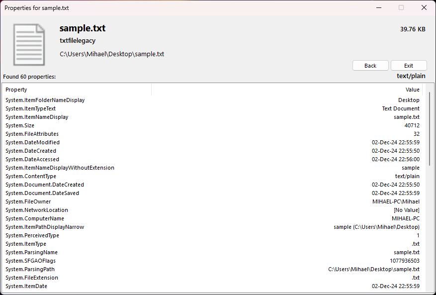

FilePropertyViewer
A Windows Forms app built with .NET Framework to show all a file’s properties. Yeah, it needs .NET Framework 4.8.1. Deal with it.
Key Features:
- Shows every damn detail about the file (we both know you won't understand most of it)
- A UI that actually works, unlike most other solutions
- Stupidly easy to use
- Less than a megabyte in size — unless you count the bloated .NET Framework nonsense
Compatibility
Tested and working on Windows 7 and above. Older operating systems? I think you've got bigger problems, friend.
Download
Gallery
Here’s a glimpse of this masterpiece in action. Try to contain your excitement.
